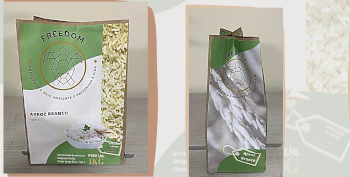
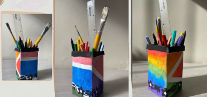

Grupo 02 - A
Integrantes:
- Andriele Duarte
- Camila Pinheiro
- Eduarda Cristina
- Fernanda Mendes
- Geovanna Duga
Estilização de caixa de leite

No Brasil, a produção de animais para consumo é considerada uma das principais responsáveis pelo desmatamento, causando perda da biodiversidade, degradação do solo e poluição da água. A pecuária é responsável por emissões humanas relacionadas com óxido nitroso, um gás-estufa com 296 vezes o potencial de aquecimento global do dióxido de carbono, e que permanece na atmosfera por 150 anos. Tendo grande devastação no espaço de pastagem.
Pelo motivo citados, optamos pelo uso de leite vegetal em nosso projeto/nossa marca. Utilizamos o leite de amêndoas. O principal benefício do leite de amêndoas é a ausência de lactose, o que faz desta bebida ideal para quem tem alergia a este açúcar. Ele é um leite leve, de fácil digestibilidade e saboroso, podendo substituir facilmente o leite de vaca. Consumir leite de amêndoas ajuda as pessoas com níveis altos de colesterol e triglicerídeos. Melhora a saúde cardiovascular. Favorece a absorção de açúcares e gorduras dos intestinos.
O método básico da produção de leite de amêndoa doméstica moderna é moer amêndoas em um liquidificador com água depois coar a polpa de amêndoa com um coador. O leite de amêndoa é rico em ácidos graxos saudáveis e carboidratos com baixo índice Também fornece outros nutrientes importantes para a saúde, como cálcio, magnésio, zinco, potássio, vitamina E e vitaminas do complexo B.
Produção da embalagem de arroz
O papel Kraft é totalmente sustentável, principalmente por ser um produto 100% reciclável, pela sua fácil degradação quando descartado no meio ambiente e por servir de adubo quando misturado com outros itens orgânicos.
O papel Kraft é resultado da mistura de diversos tipos de fibras de celulose que são encontradas na polpa de madeiras consideradas macias. E é justamente pelo fato de conter toda essa mistura de fibras que o papel Kraft se torna um produto tão resistente, ao mesmo tempo em que, apresenta maciez e flexibilidade.
As sacolas de papel kraft são produzidas com fontes renováveis, minimizando o impacto ambiental, podendo ser recicladas e aproveitadas também na compostagem para plantas, é possível afirmar o quanto esse material é útil para a melhoria do impacto acelerado no meio ambiente.
Reutilização da embalagem como porta-lápis
Reutilização da embalagem como vaso de plantas